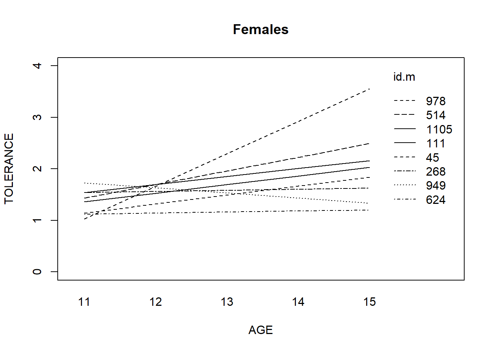

14 LAB Prático NO R: Análise Exploratória Longitudinal
Abra o Rstudio
Iremos utilizar os exemplos dos livros de Singer e Weiis, materiais encontrados na web nos respectivos endereços:
14.1 Exemplo do livro: Applied Longitudinal Data Analysis: Modeling Change and Event Occurrence por Singer & Willet
Dados de cinco ondas da pesquisa National Youth Survey. Os participantes tem idade de 11 a 15 anos e perguntam sobre sua tolerância em relação à comportamento ruim. Uma escala de 4 pontos é utilizada para medir a tolerância - 1 sendo “muito errado” e 4 sendo “nada errado”. Perguntas são do tipo é errado: usar maconha?, destruir propriedade de outras pessoas?, roubar algo de pequeno valor?, ameaçar alguém sem razão?, usar alcool?, etc…. A variável resposta é a média do escore para todas as perguntas e ainda há as variáveis: sexo (homens), Exposure (se foram expostos à algum desses comportamentos aos 11 anos) - maiores detalhes, consultar o livro.
14.1.1 Olhando os dados: dados nível pessoa vs pessoa-período
Vamos, inicialmnete utilizar a base de dados em formato “nível-pessoa” (wide) e realizar o reshape para transformar em formato longo
A base de dados está disponível na internet. Digite a sequência de comandos:
Olhe para os seus dados. O que você pode ver? Há muitas mudanças ao longo do tempo?
Para passar para o formato longo utilizamos a função reshape .
## Wide to long
tolerance.pp <- reshape(tolerance,
varying = c("tol11", "tol12", "tol13", "tol14", "tol15"),
v.names = "tolerance",
timevar = "time",
times = c(0, 1, 2, 3, 4),
new.row.names = 1:1000,
direction = "long")
tolerance.pp <- tolerance.pp[order(tolerance.pp$id),]
tolerance.pp[1:10,]Também podemos partir do formato longo para o formato largo.
14.1.2 Verificando a correlação entre os dados
Um dos pontos bem reforçados na aula foi que em dados longitudinais espera-se que as medidas repetidas de um mesmo indivíduo sejam positivamente correlacionadas. Podemos verificar essa correlação de forma numérica e gráfica. Para isso (e somente isso) utilizamos o banco em formato largo.
Ainda não temos uma ideia completa de como a variável resposta muda com o tempo. Existe alguma correlação positiva entre esses dados - embora fraca - e não parece existir um padrão estabelecido na correlação. Podemos dizer, no entanto, que adolescentes que tinham comportamento mais tolerável em uma onda, tendem a continuar toleráveis na onda seguinte. Ainda não temos como verificar como cada pessoa muda com o tempo.
Correlação entre as medidas não nos diz nada sobre mudança no tempo. Precisamos verificar os gráficos de crescimento.
14.1.3 Plotando as trajetórias
Para plotar o gráfico com as curvas de crescimento - trajetórias - podemos utilizar o comando xyplot. Também utilizaremos esse comando para plotar as trajetórias suavizadas. Para saber mais detalhes sobre esse comando, visite o endereço:
Note que, para os gráficos de crescimento, precisamos utilizar o arquivo em formato pessoa-período. Não temos a variável age e temos que criá-la. O objetivo aqui é observar as 16 trajetórias e tentar responder a pergunta de como as pessoas mudam com o tempo? A ideia é plotar todas as trajetórias numa única página para facilitar a observação - mantendo todos os gráficos na mesma escala.
Tente responder:
Tolerância aumenta com a idade?
Quais indivíduos possuem trajetórias diferentes dos demais?
A tolerância muda bastante com o tempo ou é relativamente estável?
library(lattice)
tolerance.pp$age<-(tolerance.pp$time+1)+10
xyplot(tolerance ~ age | id, data=tolerance.pp, as.table=T)
## Utilizando a suavização
xyplot(tolerance~age | id, data=tolerance.pp,
prepanel = function(x, y) prepanel.loess(x, y, family="gaussian"),
xlab = "Age", ylab = "Tolerance",
panel = function(x, y) {
panel.xyplot(x, y)
panel.loess(x,y, family="gaussian") },
ylim=c(0, 4), as.table=T)
xyplot(tolerance~age | id, data=tolerance.pp,
prepanel = function(x, y) prepanel.loess(x, y, family="gaussian"),
xlab = "Age", ylab = "Tolerance",
panel = function(x, y) {
panel.xyplot(x, y)
panel.loess(x,y, family="gaussian") },
ylim=c(0, 4),aspect = "xy")
attach(tolerance.pp)- Considerando agora os gráficos com as trajetórias suavizadas, o que se oberva sobre as trajetórias individuais? Há três formatos básicos de trajetórias, identifique-os.
14.1.4 Plotando as trajetórias de acordo com subgrupos
Primeiramente iremos plotar as trajetórias totais: trajetórias não paramétricas e paramétricas através de regressões por mínimos quadrados.
Há duas maneiras de se fazer isso: utilizando o comando xyplot ou o comando interaction.plot . São equivalentes. Faça os gráficos e:
Dê um resumo de como se comporta a tolerância de cada indivíduo e na média.
É correto afirmar que conforme os adoslecentes ficam mais maduros, eles ficam mais toleráveis?
O padrão de mudança é homogêneo ou heterogêneo?
## Os dados brutos - Geral
# Trajetórias não paramétricas
interaction.plot(tolerance.pp$age, tolerance.pp$id, tolerance.pp$tolerance)
# ou
xyplot(tolerance ~ age , data=tolerance.pp, groups = id, xlab = "Age", ylab = "Tolerance",
ylim=c(0, 4), type = c("a") )
# compare sem os grupos -- trajetórias médias suavizadas
xyplot(tolerance ~ age , data=tolerance.pp, xlab = "Age", ylab = "Tolerance",
ylim=c(0, 4), type =c( "smooth") , lwd = 3)
## Trajetórias paramétricas
# Primeiro ajusta-se regressões OLS para cada indivíduo
fit <- by(tolerance.pp, tolerance.pp$id, function(bydata)
fitted.values(lm(tolerance ~ time, data=bydata)))
fit <- unlist(fit)
# As trajetórias
interaction.plot(age, id, fit, xlab="age", ylab="tolerance")
# ou
xyplot(tolerance ~ age , data=tolerance.pp, groups = id, xlab = "Age", ylab = "Tolerance",
ylim=c(0, 4), type = "r" )
# trajetória média
xyplot(tolerance ~ age , data=tolerance.pp, xlab = "Age", ylab = "Tolerance",
ylim=c(0, 4), type = "r" , lwd=3)Agora iremos realizar um gráfico parecido com o anterior, mas considerando os homens apenas. Depois replique os mesmos comandos para mulheres (identifique o que precisa modificar no código);
## Para Homens
tolm <- tolerance.pp[tolerance.pp$male==0 , ]
fitmlist <- by(tolm, tolm$id, function(bydata)
fitted.values(lm(tolerance ~ time, data=bydata)))
fitm <- unlist(fitmlist)
## Juntando a média para todo o grupo
lm.m <- fitted( lm(tolerance ~ time, data=tolm) )
names(lm.m) <- NULL
fit.m2 <- c(fitm, lm.m[1:5])
age.m <- c(tolm$age, seq(11,15))
id.m <- c(tolm$id, rep(111, 5))
## O gráfico
# id.m=111representa o valor médio
interaction.plot(age.m, id.m, fit.m2, ylim=c(0, 4), xlab="AGE", ylab="TOLERANCE", lwd=1)
title(main="Males")E para mulheres? Quais os comandos você usaria para gerar o gráfico a seguir?

Compare os gráficos e tente identificar:
As trajetórias diferem entre grupos?
Onde estão as maiores diferenças? No estado inicial ou na inclinação?
Tem algum grupo com trajetórias mais ou menos heterogêneas?
14.2 Exemplo do livro: Modeling Longitudinal Data por Robert Weiss
A mesma análise feita anteriormente pode ser repetida para qualquer banco de dados longitudinal. Nessa seção iremos utilizar uma base de dados não balanceada com pesos de ratos medidos ao nascer. A variável dia representa em que dia eles foram pesados. Esse exemplo é do artigo com o título “A class of linear spectral models and analyses for the study of longitudinal data” por Izenman AJ e Williams JS (1989). Esses dados foram utilizados no capítulo 2 do livro “Modeling Longitudinal Data” por Robert Weiss. Vamos, no entanto, seguir a abordagem sugerida por Diggle, et.all.
Note que os códigos são um pouco mais complexos e por isso eles estão disponíveis num script do R com o nome "ScriptWeissMice".
A variável resposta é a variável “weight” e a variável de tempo é a variável “time”. No banco de dados também tem o id de cada ratinho e uma variável de grupo (data da pesagem) (Ver livro página 30).
Digite os comandos no R (ou copie e cole do txt). Verifique o output e se faça as mesmas perguntas do exemplo anterior, por exemplo:
Há muitas mudanças ao longo do tempo?
Como os ratinhos mudam com o tempo?
O peso aumenta com os dias?
Quais os ratinhos possuem trajetórias diferentes dos demais?
Dê um resumo de como se comporta o peso de cada rato e na média.
O padrão de mudança é homogêneo ou heterogêneo?
As trajetórias diferem entre grupos?
Onde estão as maiores diferenças? No estado inicial ou na inclinação?
Tem algum grupo com trajetórias mais ou menos heterogêneas?
Como está a correlação para as respostas dos ratinhos?
## Lendo os dados
mice <- read.table("mice.dat",header=T)
## Olhando a base
mice[1:10,]
plot (mice$wt ~ mice$time,data = mice, pch = ".", xlab = "Days",
ylab="Weight")
## Gráficos de curvas de crescimento
library(lattice)
xyplot(mice$wt ~ mice$time , data=mice, ylab = "Weight", xlab = "Days")
## Box-plot
bwplot (mice$time ~ mice$wt , data=mice)
## Trajetórias
#trajetória média
xyplot(mice$wt ~ mice$time , data=mice, ylab = "Weight", xlab = "Days", type="a")
#trajetória suavizada
xyplot(mice$wt ~ mice$time , data=mice, ylab = "Weight", xlab = "Days", type="smooth")
#outra maneira de plotar trajetórias suavizadas
plot (mice$wt ~ mice$time, data = mice, col = "black", pch = ".",
xlab = "Days",
ylab = "Weight")
with (mice, {
lines (ksmooth ( mice$time, mice$wt, kernel = "box"), lty = 1,
col = 1, lwd = 2)
lines (ksmooth ( mice$time, mice$wt, kernel = "normal"), lty = 2,
col = 2, lwd = 2)
lines (loess.smooth ( mice$time, mice$wt, family = "gaussian"),
lty = 3, col = 3, lwd = 2)
lines (smooth.spline ( mice$time, mice$wt), lty = 4, col = 4, lwd = 2)
lines (supsmu (mice$time, mice$wt), lty = 5, col = 5, lwd = 2)
})
legend (0, 1210,legend = c("Boxcar", "Gaussian Kernel", "Gaussian Loess",
"Cubic Smooth Spline", "Super Smoother"),lty = 1:5, col = 1:5)
## Trajetórias por ID
xyplot(mice$wt ~ mice$time , data=mice, ylab = "Weight", xlab = "Days", type="l", groups=id)
xyplot(mice$wt ~ mice$time| id , data=mice, ylab = "Weight", xlab = "Days", groups=id)
# Selecionando um grupo de indivíduos
s <- sample (unique (mice$id), size = 4)
plot (mice$wt ~ mice$time, data = mice , col = "gray50",
xlab = "Days",
ylab = "Weight")
for (i in 1:4) {
lines (mice$time[mice$id == s[i]],
mice$wt[mice$id == s[i]], lwd = 1.5)
}
## Quantis
mice.lo <- loess (mice$wt ~ mice$time, span = 0.25, degree = 1, data = mice)
mice$res <- resid (mice.lo)
aux <- sort (tapply(mice$res, mice$id, median))
aux <- aux[c(1, round ((1:4) * length (aux) / 4))]
aux <- as.numeric (names (aux))
leg <- c("0%", "25%", "50%", "75%", "100%")
plot (mice$res ~ mice$time, data = mice, col = "gray70",xlab = "Days", ylab = "weight")
with (mice,
for (i in 1:5) {
subset <- mice$id == aux[i]
lines (mice$time[subset], mice$res[subset],
lwd = 2, lty = i)
text (mice$time[subset][1],
mice$res[subset][1],
labels = leg[i])
})
## Relação com outras variáveis
xyplot (mice$wt ~ mice$time| mice$group , data = mice, type = "l", group = mice$id,
xlab = "Days",col.line = "gray20",
ylab = "Weight",strip = strip.custom (var.name = "group"))
## Explorando Correlação
mice.lm <- lm (mice$wt ~ mice$time, data = mice)
mice$lmres <- resid (mice.lm)
mice$roundyr <- round (mice$time)
## Transformando em wide - reshape
micew <- reshape (mice[,c("id", "lmres", "roundyr")],
direction = "wide",
v.names = "lmres", timevar = "roundyr",
idvar = "id")
micew[1:10,]
## Histogramas na diagonal
panel.hist <- function(x, ...) {
usr <- par("usr"); on.exit(par(usr))
par(usr = c(usr[1:2], 0, 1.5) )
h <- hist(x, plot = FALSE)
breaks <- h$breaks;
nB <- length(breaks)
y <- h$counts;
y <- y/max(y)
rect(breaks[-nB], 0, breaks[-1], y, col="cyan", ...)}
## Gráfico super elaborado. As correlações aparecem numa metade da matriz .
panel.cor <- function(x, y, digits=2, prefix="", cex.cor) {
usr <- par("usr"); on.exit(par(usr))
par(usr = c(0, 1, 0, 1))
r <- abs (cor(x, y, use = "pairwise.complete.obs"))
txt <- format(c(r, 0.123456789), digits=digits)[1]
txt <- paste(prefix, txt, sep="")
if(missing(cex.cor)) cex <- 0.8/strwidth(txt)
text(0.5, 0.5, txt, cex = cex * r)
}
pairs (micew[,c(5,2,3,6:9)], upper.panel = panel.cor,diag.panel = panel.hist)
micew
cor(micew[ , 2:21], use = "pairwise.complete.obs")
pairs(~lmres.0+lmres.1+lmres.3+lmres.9+lmres.15+lmres.18,data=micew)
pairs(~lmres.1+lmres.2+lmres.3+lmres.4+lmres.5+lmres.6+lmres.7+lmres.8+
lmres.9+lmres.10+lmres.11+lmres.12+lmres.13+lmres.14+lmres.15+
lmres.16+lmres.17+lmres.18+lmres.19,data=micew)